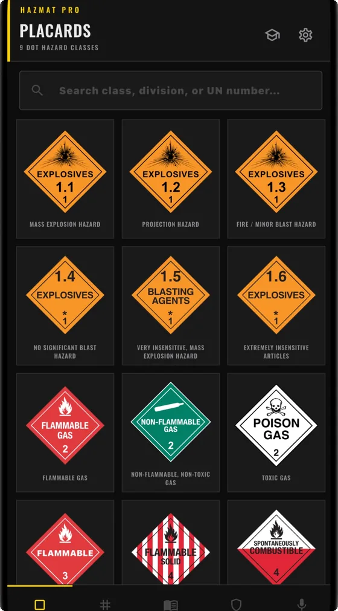
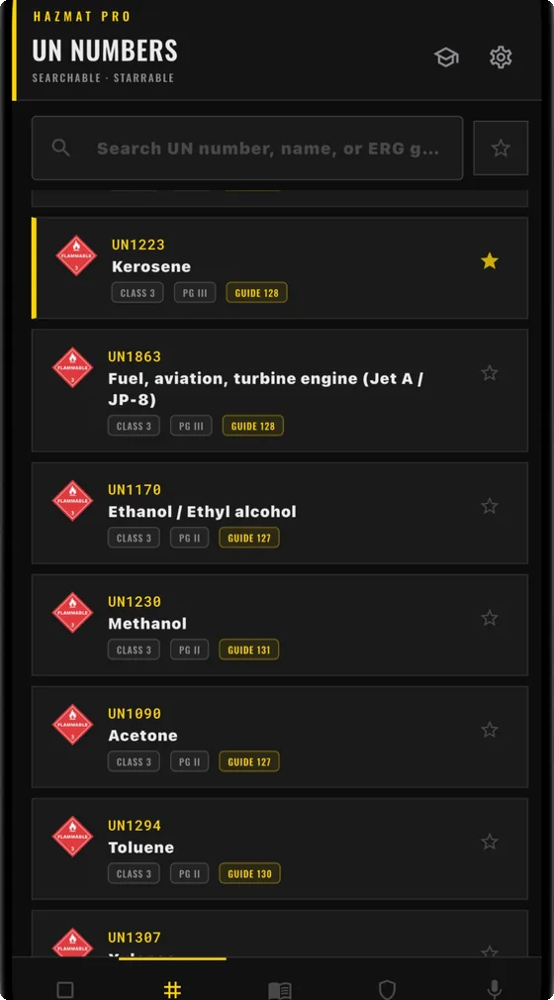
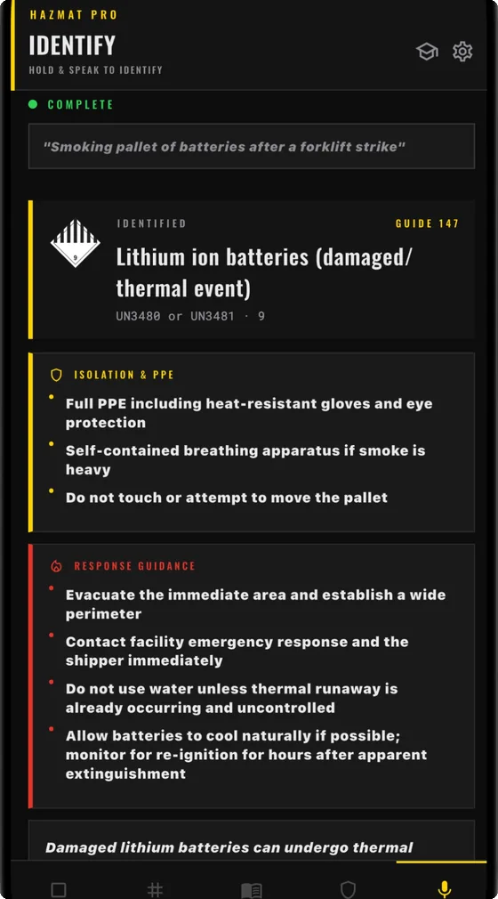

Every DOT placard, 55+ UN numbers with their ERG guide numbers, all 9 GHS pictograms, and a voice-powered Identify tool — for CDL drivers, dispatchers, EHS officers, and first responders.
You pull up alongside a placarded tanker or a shipping label you don't recognize, and you need the answer in seconds, not a PDF search. HazMat Pro puts the placard table, the UN number index, and the terminology in your pocket — most of it without a signal bar in sight.
Built for the moment you need it, not the moment you have signal. One-time purchase, no subscription, no ads — and placards, UN numbers, glossary and quick reference all work fully offline.
The app is laid out the way a field reference gets used — one tab per question you're likely to have, with Quiz mode a tap away from the header.



Identify takes the question the way you'd ask a partner, not the way a database wants it.
“Smoking pallet of batteries after a forklift strike”
| Material | Lithium ion batteries — damaged, thermal event |
| UN number | UN3480 or UN3481 |
| Class | 9 — Miscellaneous dangerous goods |
| ERG guide | 147 |
| Response | Full PPE, evacuate and establish a perimeter, no water unless thermal runaway is already uncontrolled, and monitor for re-ignition for hours after apparent extinguishment |
$3.99, once. No subscription, no ads, no in-app purchases, no account.
A DOT hazmat placard is the diamond-shaped sign required on vehicles and containers transporting hazardous materials in the US, identifying the hazard class — like Flammable Liquid, Corrosive, or Explosives — by color, symbol, and class number under 49 CFR. HazMat Pro includes all 19 placard divisions with color, symbol, and handling notes.
A UN number is a four-digit code assigned by the United Nations to identify a specific hazardous material or class of materials during transport, such as UN1203 for gasoline or UN1830 for sulfuric acid. HazMat Pro's UN Numbers tab includes 55+ entries with shipping name, hazard class, packing group, and ERG guide number.
The Emergency Response Guidebook is the standard reference used by first responders during the initial phase of a hazmat transportation incident, jointly published by the US DOT, Transport Canada, and Mexico's SCT. It assigns each material a guide number with isolation distances and response guidance. HazMat Pro references current ERG guide numbers throughout its placard and UN number data.
No. HazMat Pro is a field reference and training aid meant to speed up lookups and build familiarity with placards, UN numbers, and terminology. It's not affiliated with the DOT or PHMSA and doesn't replace the current official ERG, your organization's SOPs, or CHEMTREC in an actual incident — always confirm against the current official guidebook before acting on this data in the field.
Yes, for almost everything. Placards, UN numbers, the glossary, and quick reference are all stored on-device. Identify resolves exact UN numbers and known shipping names offline too — only free-text or descriptive queries that aren't already in the local database need a network connection.
HazMat Pro is built for CDL drivers with a hazmat endorsement, dispatchers, warehouse and logistics staff, EHS and safety officers, and first responders who need a fast placard, UN number, or terminology lookup without carrying a physical guidebook.
No. HazMat Pro is a one-time purchase — no subscription, no ads, no in-app purchases.
The reference material behind the app, on the web and free to use.
HazMat Pro is an independent field reference and training aid, not affiliated with the US DOT, PHMSA, the ERG's publisher, or CHEMTREC. Placard and UN number data has been cross-checked against the Emergency Response Guidebook and 49 CFR §172.101, but this app does not replace the current official guidebook, your organization's procedures, or CHEMTREC in an actual emergency. Always confirm against current official sources before acting on this data in the field.